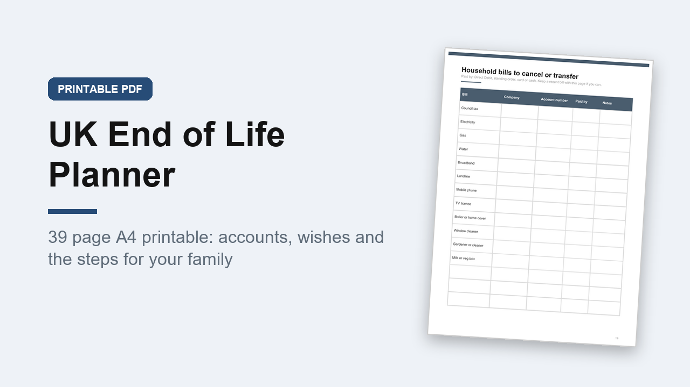

UK End of Life Planner, If Anything Happens to Me Record Book, A4 PDF
GBP 6.00 · instant digital download

A calm, practical record book for UK households, so the people you love can find everything they need.
UK terms throughout: National Insurance and NHS numbers, council tax, TV licence, Premium Bonds, ISAs, the State Pension, Lasting Power of Attorney, V5C logbooks, Tell Us Once.
What you get: 1 printable A4 PDF, 39 pages, not editable, you print it and write on it.
Inside: how to use, what this book is and is not, an updates log, about me, where my important documents are, key contacts, my will, Lasting Power of Attorney, health and care, 8 bank account records over 2 pages, savings and investments, 4 pension records, work and income, property, debts and credit, insurance and life cover, household bills to cancel or transfer, vehicles, subscriptions, digital accounts (no passwords), devices and digital legacy, home and keys, pets, people who rely on me, 2 pages of funeral wishes, 2 pages of people to tell, organisations to tell, the usual steps after a death in the UK, treasured possessions, about my life, 3 message pages and 2 notes pages.
It is a record of information only.
It is not a will and is not legal advice.
Digital download, nothing is posted..
What happens after you buy
Payment and delivery are handled by Gumroad. You get the download straight after paying, and a copy of the link by email. Nothing is posted to you.
Tags: end of life planner, funeral wishes, life admin, emergency binder, legacy planner, final wishes, family records, when i die, a4 printable, uk planner